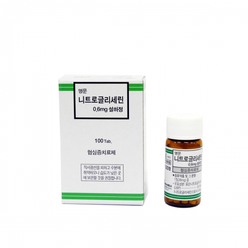
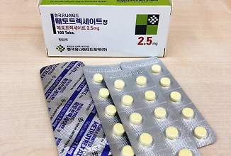

01
Quick
약병을 열고 수량을 확인하는 복잡한 과정을 하나의 버튼 동작으로 단축합니다.
Q-Tab은 기존의 번거로운 복약 과정을 혁신하여 누구나 쉽고 빠르게 약을 복용할 수 있는 솔루션을 연구하는 메디테크(Medi-Tech) 팀입니다.
첫 번째 제품인 Medi-Push One은 뚜껑을 열고 약을 꺼내는 과정을 버튼 한 번의 동작으로 단축하는 경구약 디스펜서입니다.
우리는 기술이 사람을 돕는 가장 따뜻한 방법은 복잡한 과정을 줄이는 ‘간편함’에 있다고 믿습니다.

약병을 열고 수량을 확인하는 복잡한 과정을 하나의 버튼 동작으로 단축합니다.
고령자와 손의 움직임이 불편한 사용자도 쉽게 사용할 수 있는 구조를 지향합니다.
복용 기록과 긴급 알림을 사용자 앱 및 보호자 알림 시스템과 연결합니다.
Medi-Push One은 의사의 처방과 약사의 안내에 따라 제품에 적합한 정제를 보관·배출하는 것을 전제로 기획한 시제품입니다.

협심증 증상이 발생하면 환자는 의료진에게 안내받은 방법에 따라 신속하게 약을 사용할 필요가 있습니다. 그러나 흉통이나 불안, 손 떨림이 있는 상황에서는 작은 약병을 열고 정제를 꺼내는 과정이 어려울 수 있습니다.
Medi-Push One은 이러한 개봉 단계를 줄여 사용자가 처방받은 약에 빠르게 접근하도록 보조하는 것을 목표로 합니다.

류마티스 관절염 환자는 손가락 관절의 통증이나 운동 제한으로 인해 PTP 포장에서 정제를 꺼내는 데 어려움을 겪을 수 있습니다. 디스펜서 방식은 이러한 포장 개봉 부담을 줄이는 방향으로 활용할 수 있습니다.
이 사례는 ‘응급 복용’이 아니라 손의 힘이 약한 사용자의 복약 접근성과 편의성을 개선하기 위한 적용 사례입니다.
“열지 말고, 누르세요.” 직관적인 조작 방식을 경구약 복용 과정에 적용한 원터치 디스펜서 시제품입니다.

Medi-Push One은 상단 카트리지에 정제를 보관하고, 버튼 입력 시 내부 셔터 메커니즘이 작동하여 한 번에 한 알이 배출되도록 설계한 시제품입니다.
급박한 상황에서는 통증과 불안, 손 떨림으로 인해 약병의 뚜껑을 열고 필요한 정제를 꺼내는 동작이 어려워질 수 있습니다.
고령자나 손의 근력이 약한 사용자에게는 일상적인 약병과 PTP 포장도 복약을 방해하는 장벽이 될 수 있습니다.
Q-Tab은 이 문제를 해결하기 위해 ‘버튼을 누르면 한 알이 배출되는 구조’와 ‘복약 기록 및 긴급 알림 기능’을 결합했습니다.

Medi-Push One은 의료행위를 대신하는 장치가 아니라, 환자가 처방받은 약에 보다 빠르고 간편하게 접근하도록 보조하는 것을 목표로 합니다.
약병 뚜껑을 돌리고 정제를 꺼내는 단계를 버튼 동작으로 단순화합니다.
통증이나 손 떨림이 있는 상황에서도 처방받은 약에 접근하기 쉽게 합니다.
긴급 모드가 활성화되면 보호자가 사용자의 위급 상황을 빠르게 인지할 수 있습니다.
작동 시간과 잔량을 기록해 이후 복약 상황을 확인할 수 있도록 지원합니다.
오른쪽의 PUSH 버튼을 직접 눌러 발표 중 작동 방식을 시연할 수 있습니다.
버튼을 한 번 누르면 정제 한 알이 배출됩니다. 초기 잔량은 10정이며 작동할 때마다 1정씩 감소합니다.
장치 화면에 남은 정제 수량이 표시됩니다. 잔량이 0정이면 추가 배출을 중지하고 보충 안내를 표시합니다.
버튼을 빠르게 두 번 누르면 화면에 EMERGENCY가 표시되고, 사용자 앱과 등록된 보호자에게 긴급 알림을 전송하는 방식입니다.
정제를 다시 채운 후 버튼을 약 1초 이상 길게 누르면 표시 잔량이 10정으로 초기화됩니다.
장치에는 의료진 또는 약사가 적합성을 확인한 정제만 보관해야 합니다. 약의 종류·용량·복용 시점은 장치가 결정하지 않으며 반드시 처방과 복약 지도를 따라야 합니다.
실제 복용은 반드시 해당 의약품의 처방 및 의료진의 안내에 따라야 합니다.
의료진에게 안내받은 증상이 발생하면 안전한 자세를 취하고 장치를 준비합니다.
PUSH 버튼을 한 번 눌러 장치에 보관된 정제 한 알을 배출합니다.
배출된 정제를 처방받은 용법과 의료진의 복약 안내에 따라 사용합니다.
필요한 경우 버튼을 두 번 눌러 보호자에게 알리고, 심한 증상은 즉시 119에 신고합니다.
Q-Tab은 원터치 디스펜싱 기술을 기반으로 가정용 헬스케어 영역으로 확장합니다.
비타민과 유산균 등 매일 복용하는 건강기능식품을 종류별로 보관하고, 사용자별 복용 일정과 잔량을 관리하는 가정용 영양제 디스펜서를 기획하고 있습니다. 향후 개인별 복용 알림, 가족 계정, 잔량 관리, 정기 배송 서비스 등을 결합하여 가정 내 건강 관리 플랫폼으로 발전시키는 것이 Q-Tab의 목표입니다.
김진우
제품 기획, 웹 구현
김성준
전자 제어 구현
한지민
제품 외형, 내부 구조 설계
Medi-Push One은 제품제작 캠프에서 제작한 발표용 시제품이며 현재 허가된 의료기기가 아닙니다. 약의 보관 안정성, 정제 크기별 배출 정확도, 오작동 방지, 어린이 보호 기능, 위생·세척 구조, 전자통신 신뢰성 등에 대한 추가 검증이 필요합니다. 실제 의약품 복용은 반드시 의사·약사의 지시를 따라야 하며, 위급한 증상이 발생하면 장치 알림에만 의존하지 말고 즉시 119에 신고해야 합니다.